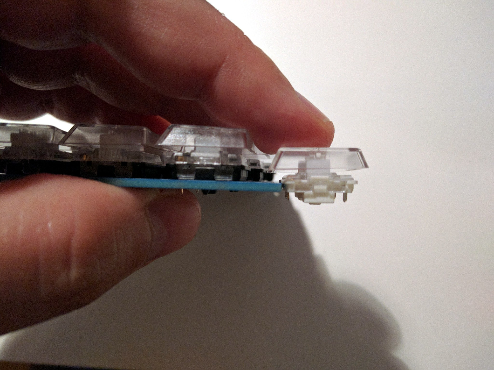

Low-profile Switches¶
Published on 2019-10-27 in Flounder Keyboard.
The first 50 switches have arrived, and I can finally compare them with my footprint and also see how they fit in the PCB. They are actually good 1.7mm lower than the “regular” kailh chocolate switches:
(Note that on this photo the switch slipped one step lower than it should be — it doesn’t sink into the PCB that far, only as far as the part from witch the legs protrude.)
The footprints and the spacing both look correct, so I will be ordering the PCB in the coming days (I’m waiting for the new plate for PewPew M4 to arrive, so that I can see if I will need a new PCB for it as well, then I can order them together and save on shipping.)